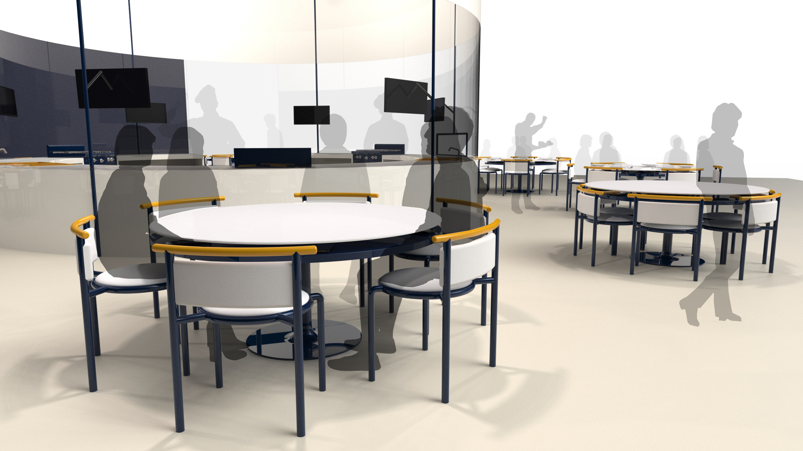
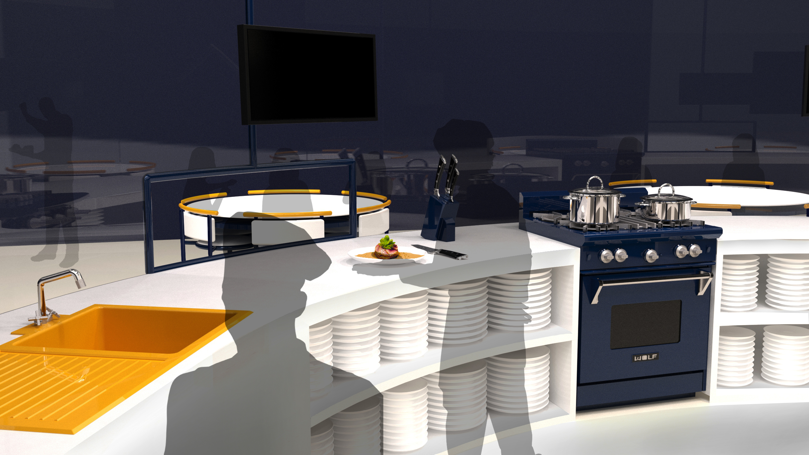
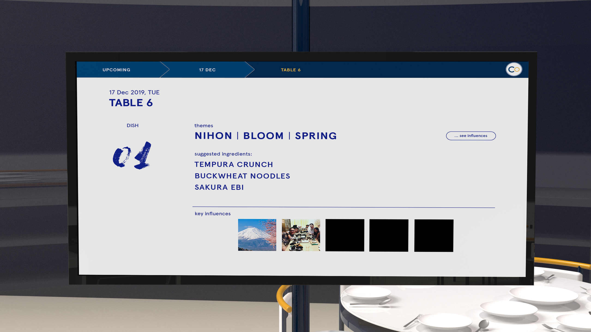
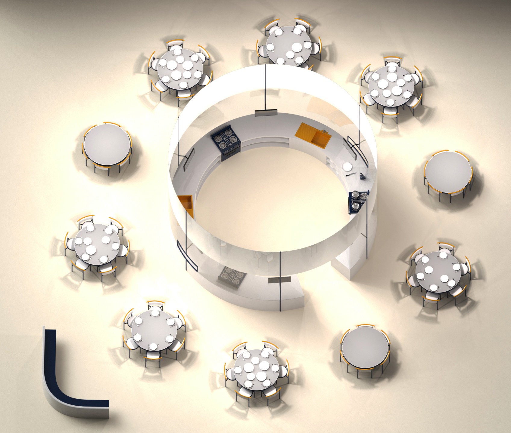

Co.
2018
Co. is a concept restaurant that aims to rekindle the intimate dining experience. We thrive to bring new forms of connections into our meals, allowing dining to be about food and people again.
Getting distracted by technology is becoming a social norm. People want to stay connected, yet they turn to their phones when faced with reasons like unrelatable conversations at the table. This dilutes our appreciation for the food, and causes us to lose the intimacy built during shared dining experiences.

A data processor will analyse the data that diners have synced, to sieve out common themes, interests, and stories within the group. This data would inform our chefs on overarching themes and suggested ingredients, whom are then free to conceptualise a menu inspired by these stories. Over the course of the meal, spend the time to discover more about one another’s interests and habits.
   